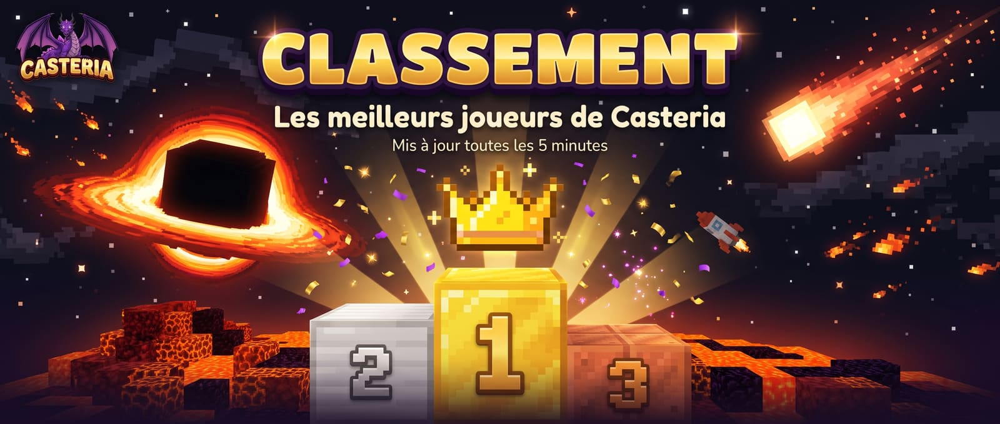

Le classement de Casteria
Comme sur /top en jeu : le classement général d'abord, puis sept thèmes, de la Fortune aux Défis. Clique sur un joueur pour voir sa fiche.
Les champions
Le classement général
Le classement de tout le serveur, tout compris.
Le classement
On compte les points...